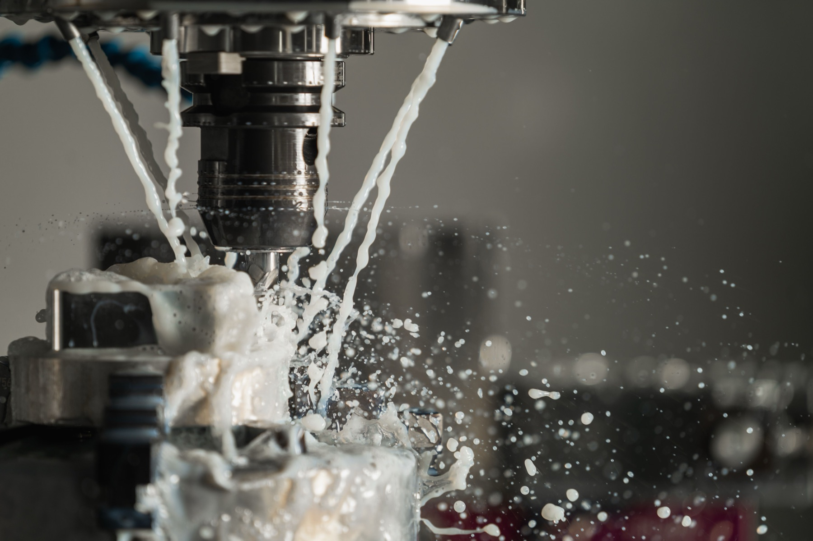

01 / ПИЛОТ
Проверить маршрут
Небольшой выпуск помогает проверить документацию, оснастку, обработку и контроль до основной партии.
Запускаем пилотную партию, фиксируем технологический маршрут и выпускаем повторяемые партии металлических деталей. Цена, срок и контроль рассчитываются по документации и количеству.

Один и тот же чертёж требует разных решений в зависимости от количества и частоты заказа. Поэтому мы сравниваем сценарии, а не назначаем универсальную цену за деталь.
Небольшой выпуск помогает проверить документацию, оснастку, обработку и контроль до основной партии.
После согласования первой детали фиксируем программу, последовательность операций и контрольные точки.
Для нового запуска сверяем актуальные файлы, количество, материал и срок. Изменение ревизии требует повторной проверки.
Чертёж, 3D-модель, материал, количество, допуски и требования к поверхности.
Сравниваем пилот, плановую партию и возможный повтор по одной версии документации.
Выбираем заготовку, оборудование, оснастку, инструмент и последовательность операций.
Контролируем первую деталь и согласованный объём партии на КИМ и другим указанным методом.
Отгружаем детали и протокол измерений по согласованной партии.
Маршрут может включать одну операцию или несколько этапов. Технолог определяет их после проверки геометрии и требований.
Подготовка производства распределяется на весь заказ, а материал, машинное время, инструмент и контроль растут вместе с количеством. Для решения нужны несколько расчётов по одной ревизии.
Проверка документации, программа, оснастка, первая установка и контроль первой детали.
Материал, машинное время, инструмент, дополнительные операции, контроль и упаковка.
Попросите цену пилота, плановой партии и повтора. Подробнее — в материале об экономике партии и на странице цен.
Единого порога нет. Экономику определяют геометрия, материал, технология, оснастка и план повторов. Запросите несколько вариантов количества.
Да. Пилот помогает проверить маршрут, документацию и порядок контроля до основного выпуска.
Её нужно подтвердить заново: могут измениться материал, количество, срок и набор операций. Актуальная ревизия файлов обязательна.
Сравнивайте одинаковый состав: материал, количество, операции, контроль, документы, упаковку, срок и условия поставки. Подробный чек-лист есть в статье о сравнении КП.
Укажите пилотный объём, плановую партию и требования к контролю. Технолог подготовит цену и срок за 3 рабочих дня.
Запросить расчёт